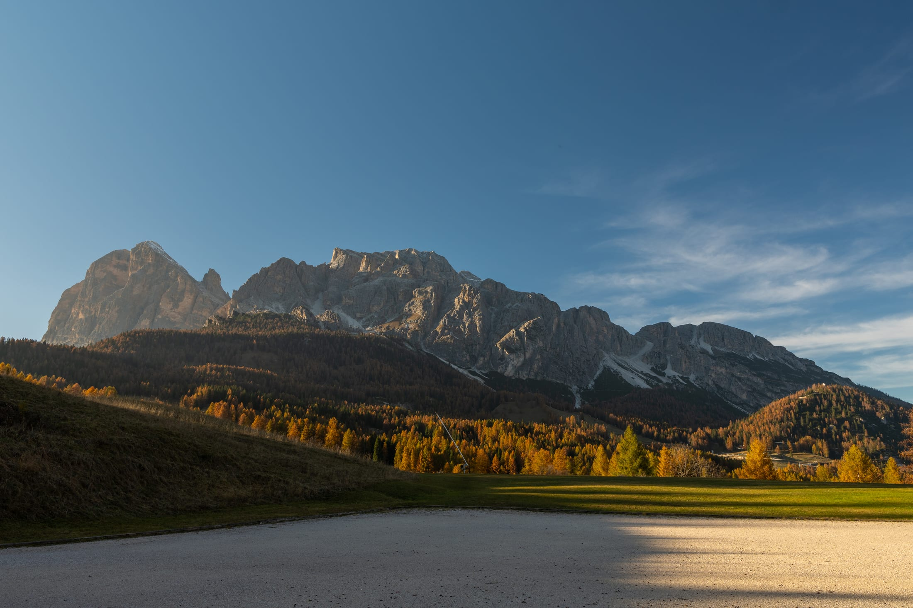
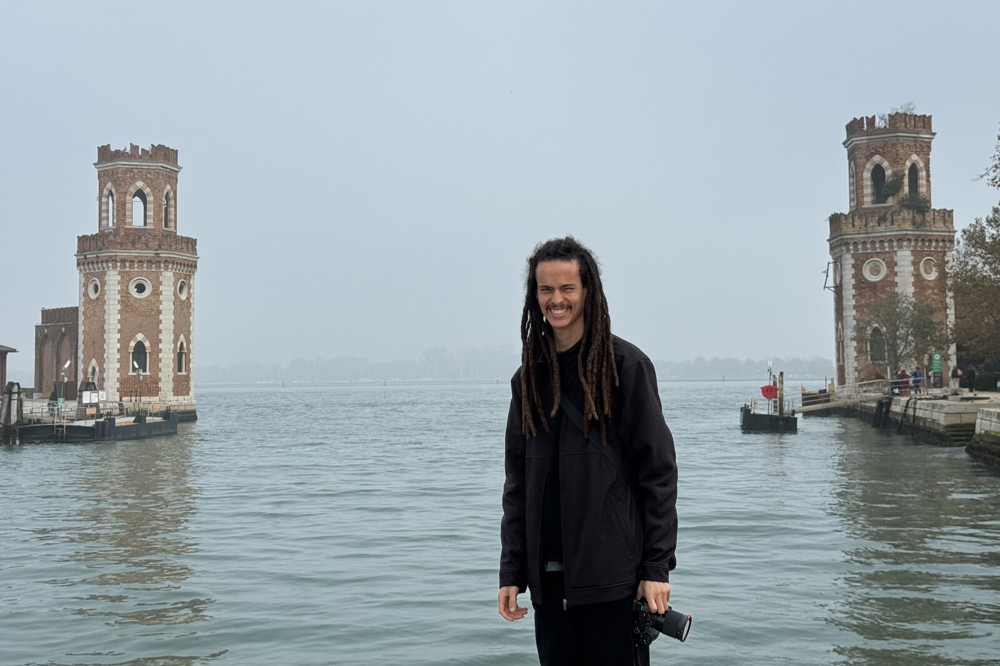

- Fotografia
- Direção
- Edição
- Cor
- Documentário
- Videoclipe
Imagens que ficam
na memória.
Filmes e videoclipes com olhar cinematográfico. Da primeira ideia ao corte final.
Reel 2026
Um corte de dois minutos com o que define o meu trabalho: ritmo, luz e uma história que se sustenta sem legenda.
Pedir o reel completoProjetos
Coleções
Fotografias por lugar e tema.
Arraste para navegar, clique para abrir a galeria.
Frames
Recortes soltos de viagens, grutas e cidades.
Do roteiro ao master final
- Direção Conceito, decupagem e condução de set para filme e clipe.
- Edição e montagem Ritmo e narrativa construídos a partir do material bruto.
- Color grading Tratamento de cor e look cinematográfico em DaVinci Resolve.
- Som e mixagem Desenho sonoro, trilha e mixagem para entrega final.
- Finalização Gráficos, créditos e masters nos formatos de cada canal.

Sobre
Sou Estevão Souza, fotógrafo e videomaker baseado no Brasil. Trabalho com artistas que querem mais do que um vídeo bonito: querem uma história bem contada.
Cuido do processo inteiro ou entro num ponto específico da cadeia. O importante é que cada corte tenha intenção.
8 anos filmando, desde 2018.
Filmes completos e cortes, publicados no Vimeo.
Seguir no VimeoVamos criar algo.
Conte a ideia. Eu respondo com um caminho para tirá-la do papel.